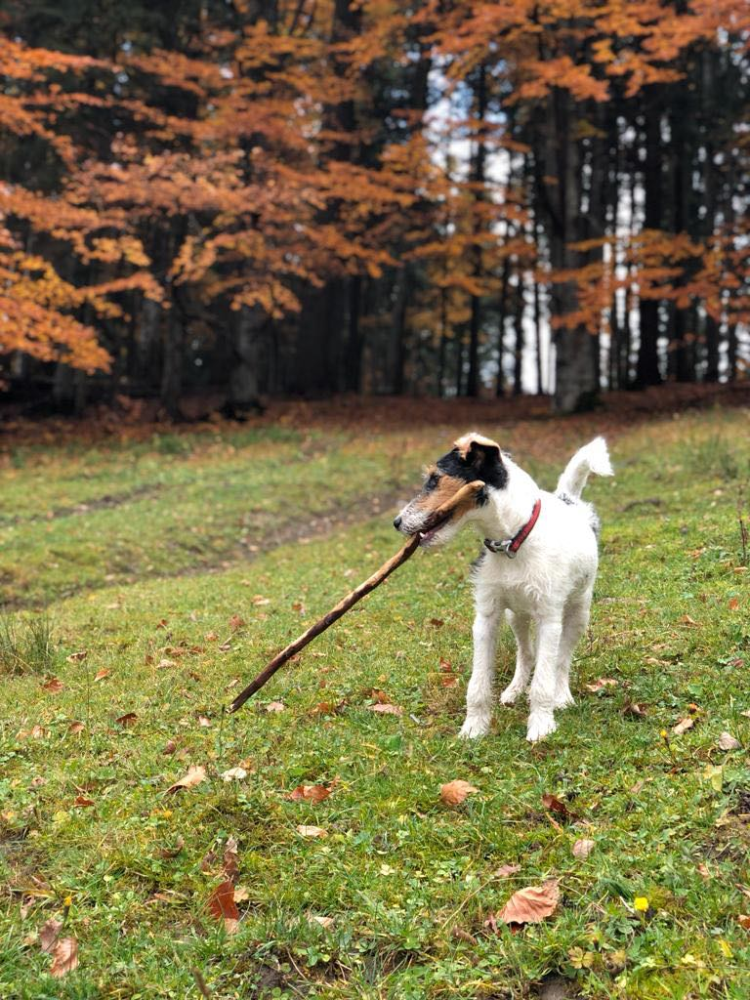
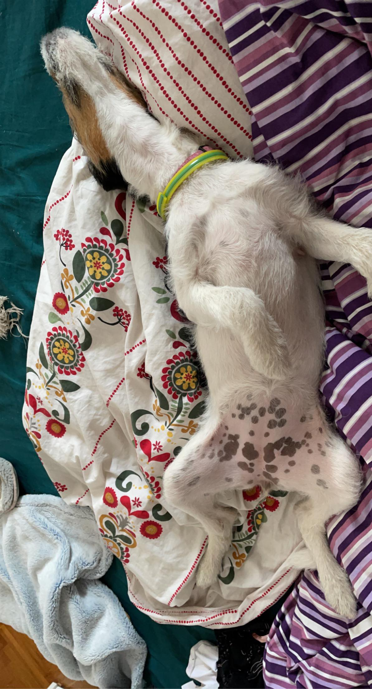
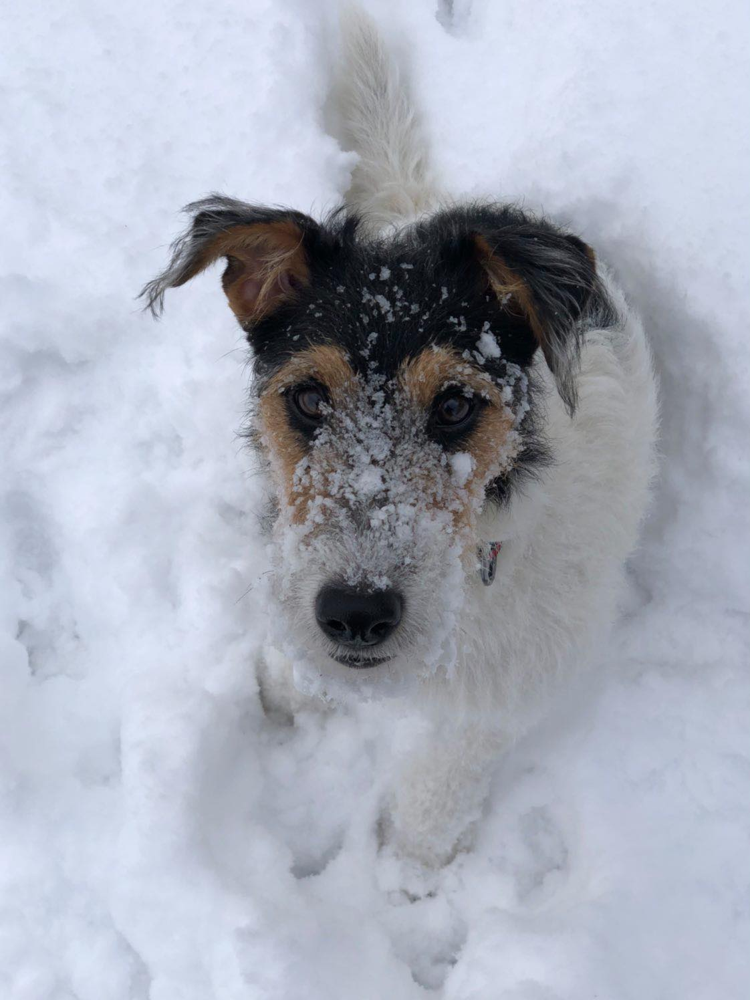
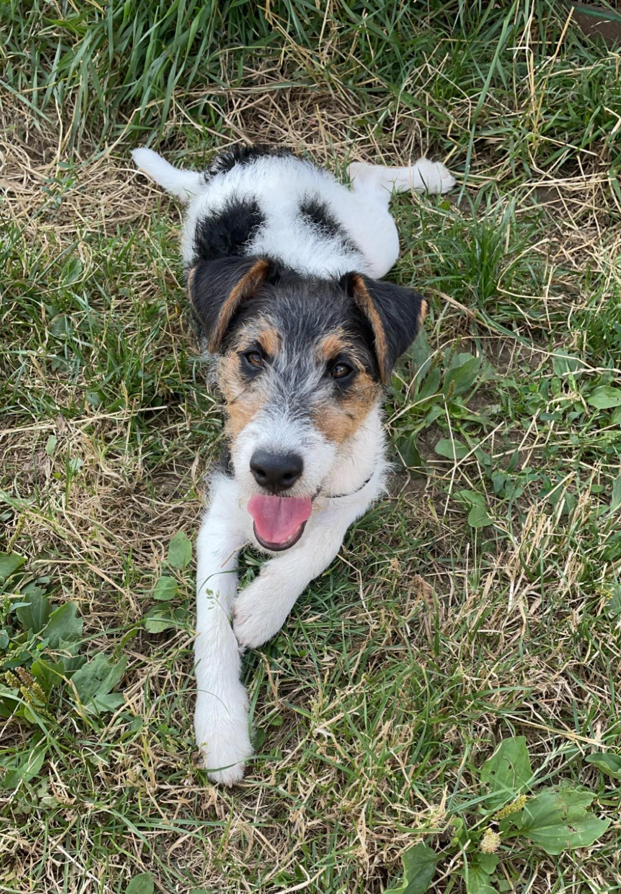
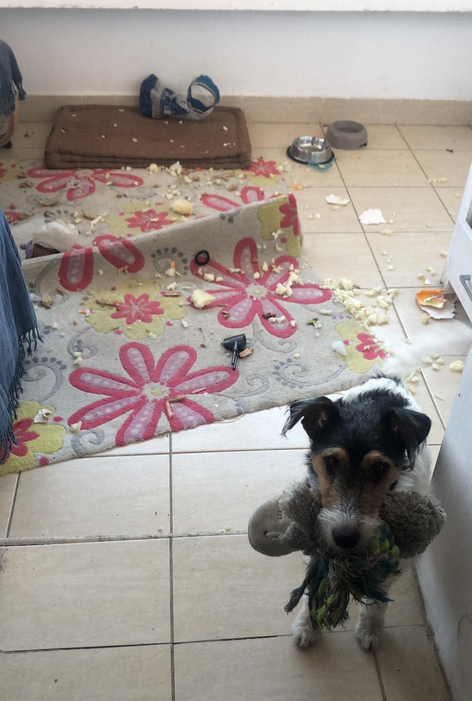
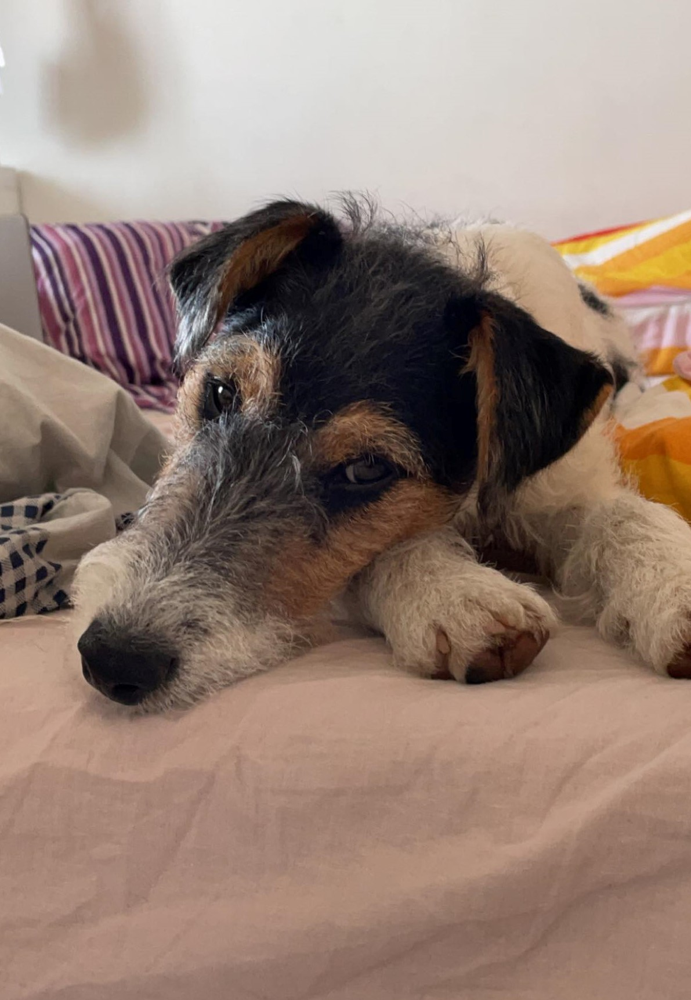

Contains:
- A short funny story
- Something about me
- Promo
7:30 am: Beep. Beep. Beep.
There’s that weird thing again. It happens every morning just after the giant light outside comes up. I still have yet to figure out
what makes that sound. It might be the human. I hope she isn’t going to explode.
Why isn’t she up yet? Doesn’t she know I need to check on the squirrels?
If she won’t get up I’ll have to do it myself. I’ll drag myself off my soft green doggy bed and, to wake her up, make my way over
to the human’s giant bed. I wish I had a bed that large.
Wake…Up! I think as I poke her with my cold, wet nose. I start licking her delicious cheek as she giggles.
“Alright, alright. I’ll take you outside.”
Outside? Outside?! We’re going outside!!
I start jumping around uncontrollably. But can you blame me? It’s outside!
Soon I’m running down the stairs and bounding across the yard with Lily, my furry canine accomplice. I smell something familiar…
“SQUIRRELS!!” Lily and I both shout at the same time. Next, we’re running from tree to tree jumping in the air trying to reach
those pesky rodents. One of these days we’ll get them.
The rest of the day goes as usual – eat, sleep, bathroom break, sleep, and eat again. A wonderful day if you ask me.
| Play Time | Relaxing |
|---|---|
|  |  |
|  |  |
|  |  |
Well besides chewing my owner slippers, as you can see in this video,
I like sticks. No, actually I love sticks
This is kind of random, but I wanted to brag that I went to the seaside
And finally, this is how I sound when there is something that I don't like:
I want to go viral on social media, so here is my account. Check it out and if you like what you see don't hesitate to follow